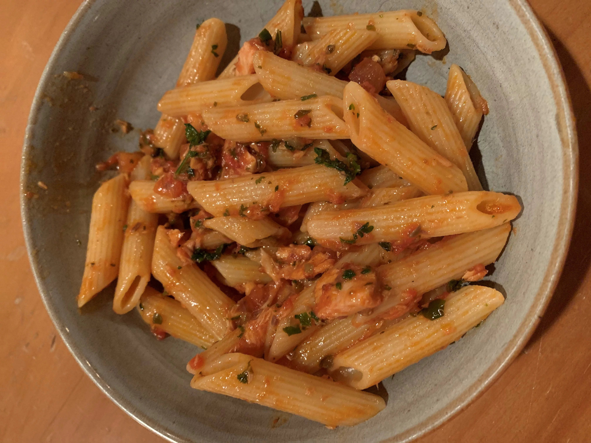

Pasta col tonno

Description
An easy to make pasta dish with delicious tuna.
Ingredients
- Pasta
- A can of tuna
- Tomato Sauce
- Onions
- Parmigiano
- Olive oil
Steps
- Add some olive oil and heat it up on a pan.
- Add chopped onion and stir occasionally until the onion is golden.
- Add tomato sauce and let it simmer for atleast 10 minutes.
- Add pasta to boiling water and let it cook for the indicated time.